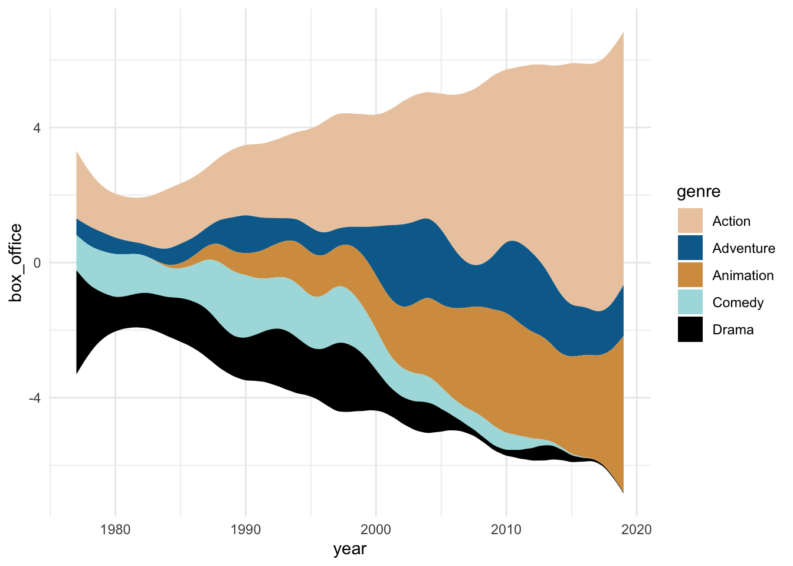
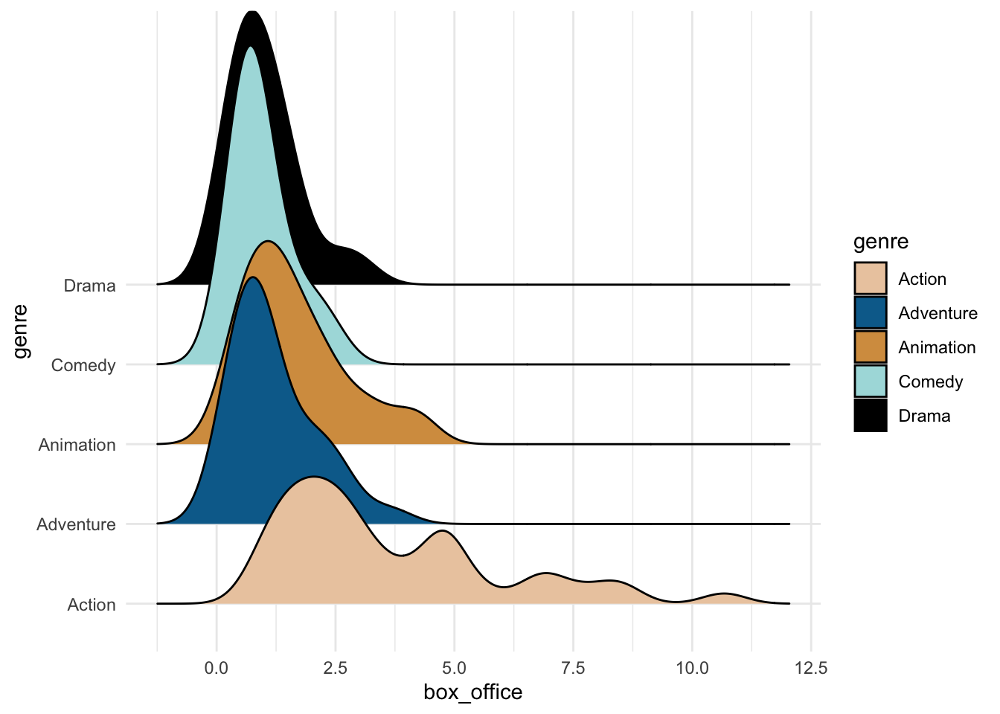
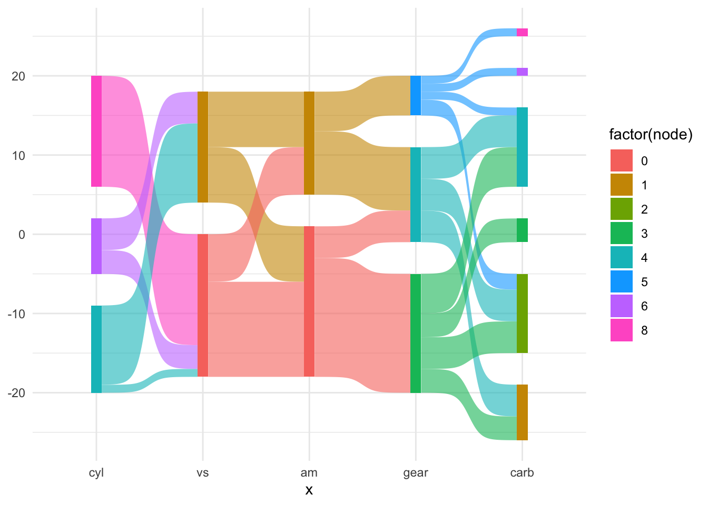
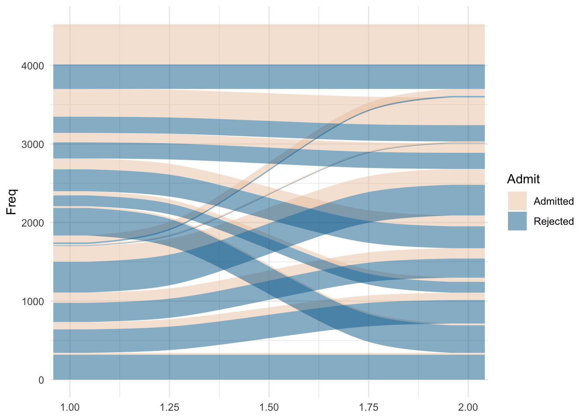
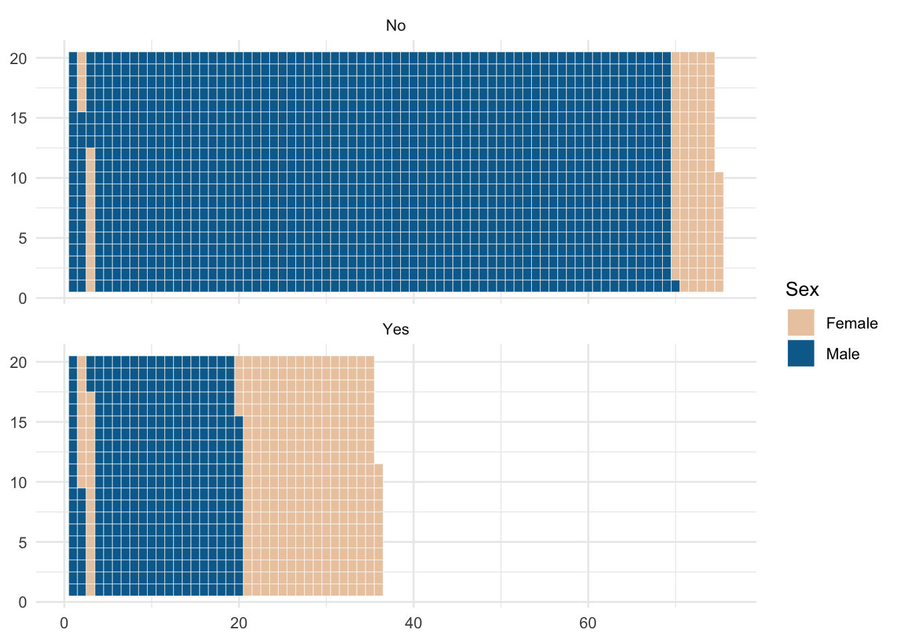
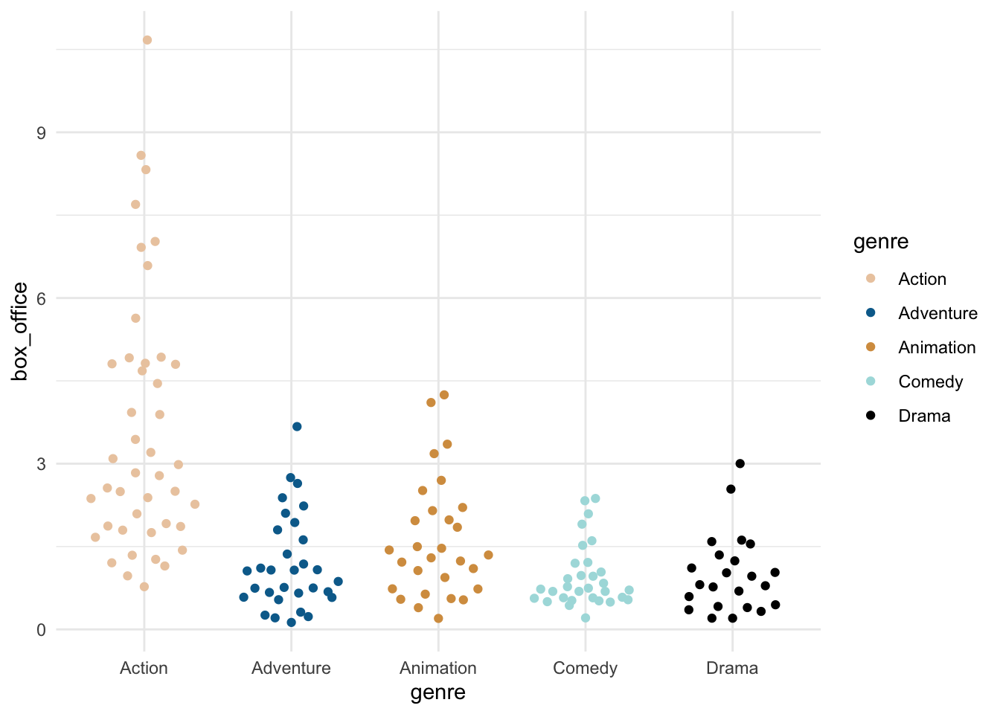
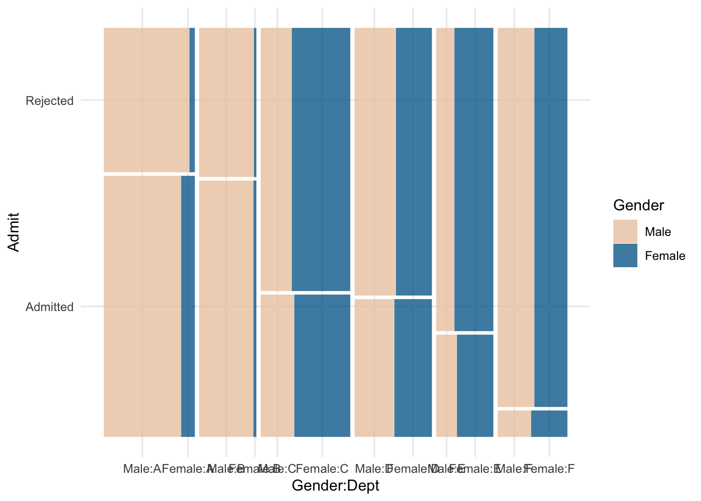

# Load required packages
library(tidyverse)
library(wesanderson)Exploring other ggplot2 geoms
Let's explore some cool charts we can make in {ggplot2}.
learn
R users are incredibly fortunate to work in an open-source community that creates and shares resources that make our work even better. The {ggplot2} package comes with incredibly useful geoms (geometric objects) to create visualizations. A full list of these can be found in the reference documents for {ggplot2}. These include:
geom_barandgeom_colfor barchartsgeom_histogramfor histogramsgeom_pointfor scatterplots
In addition, other amazing folks in the R Community have created geoms that can be used with {ggplot2} and similarly use the tidyverse framework. This is fantastic for many reasons, but some include being able to add themes, facets, titles, and other components just like with any ggplot. Here are a few geoms that I’ve tried out with examples!
- Streamgraphs using ggstream::geom_stream
- Ridgeline plots using ggridges::geom_density_ridges
- Sankey diagrams using ggsankey::geom_sankey & ggalluvial::geom_alluvial
- Bump charts using ggbump::geom_bump
- Waffle charts using waffle::geom_waffle
- Beeswarm charts using ggbeeswarm::geom_beeswarm
- Mosaic charts using ggmosaic::geom_mosaic
Setup
To be able to run this code, be sure to have the tidyverse installed. The {wesanderson} package contains beautiful palettes for visualizations.
Streamgraphs
This post includes three of David Sjöberg’s amazing geoms; he created {ggsankey}, {ggstream}, AND {ggbump}. If you haven’t seen his GitHub, please check it out now.
This first geom, geom_stream(), creates a streamplot (which I’ve also seen called stream graphs). The streamplot is an area graph that usually centers around a central axis and allows us to see large fluctuations over time. More information on streamplot can be found here.
{ggstream} also has other options available to customize the streamgraphs, such as creating an area chart. Check out the repo here.
# remotes::install_github("davidsjoberg/ggstream")
library(ggstream)
ggplot(blockbusters, aes(year, box_office, fill = genre)) +
geom_stream() +
scale_fill_manual(values = wes_palette("Darjeeling2")) +
theme_minimal()
Ridgeline plots
The {ggridges} package by Claus O. Wilke package also has a variety of geoms; check out the repo here. Ridgeline plots show the distribution of a numeric value for different groups and can look like mountain ranges. The R-Ladies Seattle hex sticker was created using ridgelines (very appropriate for the mountainous Washington!).
# install.packages("ggridges")
library(ggridges)
ggplot(blockbusters, aes(x = box_office, y = genre, fill = genre)) +
geom_density_ridges(scale = 4) +
scale_fill_manual(values = wes_palette("Darjeeling2")) +
theme_minimal()
Sankey diagrams
Another geom by David Sjöberg is geom_sankey(), repo here. This geom creates Sankey diagrams and alluvial plots, which show flow and transfers in a system or throughout time. These plots are VERY popular on the subreddit dataisbeautiful (check it out on Mondays to see some examples).
# devtools::install_github("davidsjoberg/ggsankey")
library(ggsankey)
example_dat <-
mtcars %>%
make_long(cyl, vs, am, gear, carb) # function in ggsankey to format data correctly
ggplot(example_dat,
aes(x = x,
next_x = next_x,
node = node,
next_node = next_node,
fill = factor(node))) +
geom_sankey(flow.alpha = .6) +
theme_minimal()
Another package for alluvial charts is {ggalluvial} by Jason Cory Brunson, with its repo here. The data can be in more familiar formats than what is required for {ggsankey}.
# install.packages("ggalluvial")
library(ggalluvial)
ggplot(as.data.frame(UCBAdmissions),
aes(y = Freq, axis1 = Gender, axis2 = Dept)) +
geom_alluvium(aes(fill = Admit), width = 1/12) +
scale_fill_manual(values = wes_palette("Darjeeling2")) +
theme_minimal()
Bump charts
One last one by David Sjöberg is the amazing {ggbump}, repo here. Bump plots help show change in rank over time.
# devtools::install_github("davidsjoberg/ggbump")
library(ggbump)
blockbusters2 <-
blockbusters %>%
filter(genre %in% c("Action", "Comedy", "Drama")) %>%
group_by(year) %>%
mutate(rank = rank(box_office))
ggplot(blockbusters2, aes(year, rank, color = genre)) +
geom_point(size = 7) +
geom_bump() +
scale_color_manual(values = wes_palette("Darjeeling2")) +
theme_minimal()
Waffle charts
For waffle charts, which are handy visualizations that show completion or parts of a whole, there is hrbrmstr’s {waffle}. The repo is here. Check out the ability to bring in other {ggplot2} functions, like facet_wrap. {waffle} also allows you to create pictograms using geom_pictogram, which replaces the squares in the ‘waffle’ with pictures.
# install.packages("waffle", repos = "https://cinc.rud.is")
library(waffle)
ggplot(as_tibble(Titanic), aes(fill = Sex, values = n)) +
geom_waffle(n_rows = 20, color = "white") +
facet_wrap(~ Survived, ncol = 1) +
scale_fill_manual(values = wes_palette("Darjeeling2")) +
theme_minimal()
Beeswarm charts
Beeswarm charts, similar to jitter plots in {ggplot2}, plot individual points showing distributions without allowing the points to overlap too much. Erik Clarke’s repo for {ggbeeswarm} is here.
# install.packages("ggbeeswarm")
library(ggbeeswarm)
ggplot(blockbusters, aes(x = genre, y = box_office, color = genre)) +
geom_quasirandom() +
theme_minimal() +
scale_color_manual(values = wes_palette("Darjeeling2")) +
theme_minimal()
Mosaic charts
Mosaic charts are incredibly helpful when displaying proportions of (multiple) categories. The {ggmosaic} package by Haley Jeppson (repo here) uses geom_mosaic to create these visualizations.
# devtools::install_github("haleyjeppson/ggmosaic")
library(ggmosaic)
ggplot(as.data.frame(UCBAdmissions)) +
geom_mosaic(aes(x = product(Admit, Dept), fill = Gender, weight = Freq)) +
scale_fill_manual(values = wes_palette("Darjeeling2")) +
theme_minimal()
Other geoms
I know there exist a ton of other geoms that work with {ggplot2} out there. Just as I was writing this blogpost, I discovered {gghilbertstrings}! What other gg packages or geoms do you know of? Let me know on Twitter and I’ll list them here!
Liked this post? I’d love for you to retweet!
New post 🚀 Into the ggplot2niverse! 🚀 We love geom_point, geom_bar, and the built-in geoms in #ggplot2 but have you used #rstats pkgs with other geoms that use the #tidyverse like geom_sankey and geom_waffle? 🐝🧇 See them here & let me know others
— Isabella Velásquez (@ivelasq3) March 29, 2021
👉 https://t.co/orHyDMeVdd pic.twitter.com/DxKUxIJI08